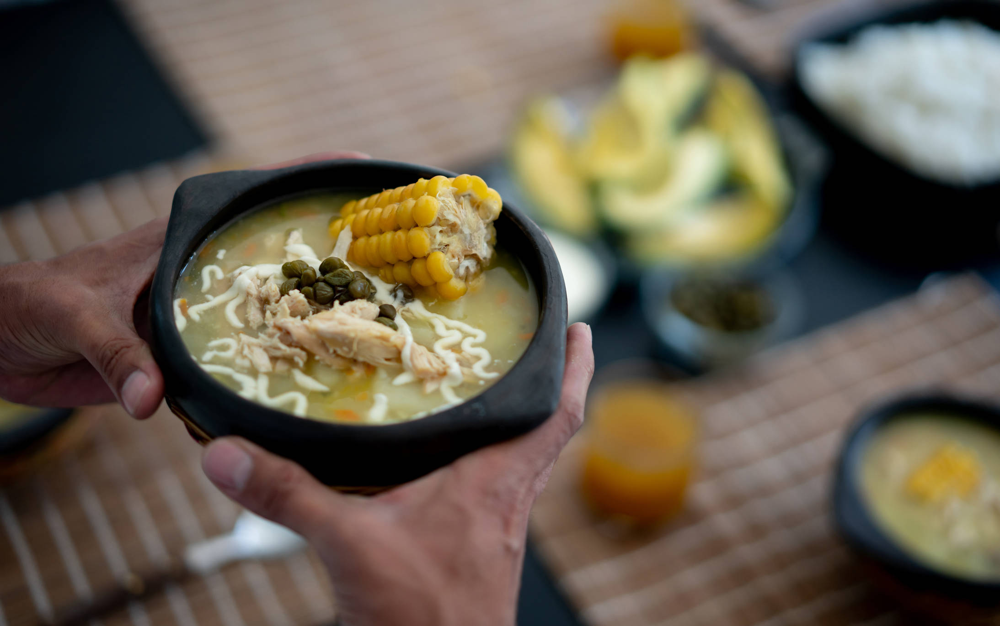

 Ajiaco santafereño El ajiaco o ajiaco santafereño es un plato tradicional de Bogotá (antes llamada Santa Fé de Bogotá); sin embargo, el rico sabor de esta sopa la ha llevado a ser identificada como uno de estos platos típicos de Colombia, por excelencia. Ingredientes: 4 tazas de agua (1000 ml) 1 sobre CALDO DE GALLINA MAGGI® DESMENUZADO (9 g) 1 pechuga de pollo pequeña sin piel pero con el hueso (400 g) ¼ de libra de papa criolla pelada y cortada en rodajas (125 g) ¼ de libra de papa pastusa pelada y cortada en rodajas (125 g) 3 mazorcas partidas a la mitad (380 g) 1/2 atado de guascas (13 g) 4 cucharadas de CREMA DE LECHE NESTLÉ® (60 g) 1 cucharada de alcaparras (20 g) 1 aguacate mediano partido en 4 porciones (300 g) Preparación: PASO 1: Mezcla los ingredientes En una olla de fondo alto con las 6 tazas de agua, disuelve el sobre de CALDO DE GALLINA MAGGI® DESMENUZADO, llévala a fuego medio y revuelve constantemente, añade a la olla: la mazorca, la pechuga de pollo con hueso y las papas. Cocina a fuego alto por 20 minutos o hasta que la papa y la pechuga estén cocinadas. PASO 2: Desmecha el pollo Retira de la olla la pechuga de pollo y déjala enfriar un poco para desmecharla. Una vez hayas desmechado el pollo, agrega a la olla las guascas y déjalas cocinar por 5 minutos más o hasta que la papa se deshaga un poco y así espese más el Ajiaco. PASO 3: ¡Disfruta! Sirve el Ajiaco santafereño en 4 platos iguales, agrega encima el pollo desmechado, decora con una cucharada de CREMA DE LECHE NESTLÉ® y alcaparras. Acompáñalo con aguacate.